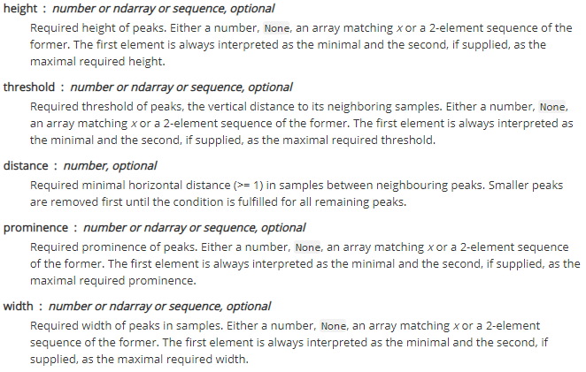

Get To Know The Module
Module Structure
To import the module successfully into your project, you have to put the Wave_Module.py file in the same directory as your project.
The module consists of two classes and a function, with each of the classes being comprised of multiple methods:
-
Input (Function)
This function is called for importing data to the project in a Pandas Data Frame structure. This module is built specifically for the Dataset mentioned above and should be changed for usage in other problems
-
wave (Class)
This class is the main class for finding the FFT and peak values of the vibrations signals.
Methods:
-
time - This will return time points of waveform.
-
FFT - This function performs the Fast-Fourier Transform on the waveform
-
peaks - This function also helps to find the eminent peaks of the waveform
-
-
envelope (class)
This class would help envelop tasks. Its functions are as same as wave class.
Methods:
- waveform
- FFT
- peaks
To fully understand the module, you can get through each of these functions and classes step by step using the code blocks below. Download the User Guide.
User Guide
1. Input Function
The Input() function is only used to make a Data Frame of the raw files. For this to work, you need to know the path of the files being analyzed. For instance, to analyze the first vibration data file in the Set 1, use the following code:
from Wave_Module import Input
# The first file in **Set 1** in named 2003.10.22.12.06.24
data_set = Input(r'...\2003.10.22.12.06.24')
- Here, we created a vibration Dataset called
data_set
The above code would make a data frame of all the data inside the file (Including data from every channel)! Therefore you should specify the channel you want to analyze.
import numpy
wave_data = data_set['channel5'].to_numpy() # Channel 5 is the first channel for Bearing 3
Channels can vary from Channel1 to Channel8 depending on the Set you are analyzing.
2. Wave Class
When the Dataset was built successfully, you can use the wave() class to perform various analyses on your Dataset. Firstly, you should define your Dataset as a wave to use the functions of the wave() class.
For a Dataset to be identified as a wave, you should know the sampling frequency or sample rate of your vibration data which, in this case, we have a sample rate of 20KHz.
from Wave_Module import wave
wave_object = wave(data=wave_data, Fs=20000)
The wave() class consists of three methods, each of which returns different outputs:
time()Calculates the duration of the waveformFFT()Calculates the FFT (Fast Fourier transform) of the waveformpeaks()Calculates the peaks in the frequency spectrum
2.1. Time Method
The time method would be helpful when you are trying to make a plot of your waveform, and this would return the time points related to the duration and sample rate of your waveform.
To adopt this method in your code, you can call the time() method from objects of type wave. You can picture your waveform by doing so:
import matplotlib.pyplot as plt
wave_time = wave_object.time()
############## Plotting the Time WaveForm ##################
fig, ax = plt.subplots(constrained_layout=True, figsize=(10, 6))
ax.set_title('Time WaveForm')
ax.plot(wave_time, wave_data, color='k')
ax.set_xlim(0,1)
ax.set_ylabel('Amplitude')
ax.set_xlabel('Time (s)')
This would plot the wavelength while X being the time data and Y being the amplitudes related to X.
Check the Matplotlib documents for more information
2.2. FFT Method
This method helps you calculate the fast Fourier transform of the waveform. This method has two outputs, one of which is the frequencies present in the waveform, and the other output is the magnitudes relative to each frequency.
You can call FFT() method from wave objects:
freqs, mags = wave_object.FFT() # Returns frequencies and their presented magnitudes
############# Plotting the FFT Spectrum ####################
fig, ax = plt.subplots(constrained_layout=True, figsize=(10, 6))
ax.set_title('FFT Spectrum')
ax.plot(freqs, mags)
ax.set_ylim(0, 0.1)
ax.set_xlim(0, 10000)
ax.set_xlabel('Frequency in Hertz [Hz]')
ax.set_ylabel('Frequency Domain (Spectrum) Magnitude')
2.3. Peaks Method
This method helps you find the peaks in the FFT spectrum. This method's attributes are prominence, threshold, height, width, distance, which are the same attributes for find_peaks in SciPy. Each of the mentioned attributes could be changed or left empty (None by default) for the best result.
|  |
|---|
| Peaks Method Attributes |
You can find more about these attributes in SciPy Reference Guide.
peaks = wave_object.peaks(prominence= 100) # Healthy peaks location
# N is equal to Fs/L where L (number of data points 20,480) and
# Fs (Sample Rate 20000 Hz) do not change in different data
N = 20000/20480
########## Plotting the FFT Spectrum with peaks ############
plt.figure(figsize=(15,8))
plt.title('FFT Soectrum')
plt.plot(freqs, mags)
plt.ylim(0, 0.06)
plt.xlim(0, 1000)
plt.xlabel('Frequency in Hertz [Hz]')
plt.ylabel('Frequency Domain Magnitude')
plt.plot(peaks, mags[[int(i) for i in peaks/N]], "x")
For more information please check the Help page.
3. Envelope Class
Envelope class is a nested class inside the wave class, Therefore there is no need to make an object from scratch.
The envelope class consists of three methods, each of which returns different outputs:
waveform()Calculates the envelope of the waveformFFT()Calculates the enveloped FFT (Fast Fourier transform) of the waveformpeaks()Calculates the enveloped FFT peaks in the frequency spectrum
The peaks method in envelope class is a little different from the wave class. Here, when calling the peaks method from an envelope object, you are prompted to enter your desired peak attributes prominence, threshold, height, width, distance in the input box.
For instance, if you want the attributes to be prominence=50, threshold=130, height=None, width=None, distance=30, you should enter the following line in the input box: 50,130,d,d,30
Here, we used 'd' to leave the attribute blank or default
In order to use either of these methods you can call envelope('method') from your wave object. For instance, to plot the enveloped waveform use the code block below:
env_wave = wave_object.envelope('waveform')
env_freqs, env_mags = wave_object.envelope('FFT')
env_peaks = wave_object.envelope('peaks')
fig, (ax1, ax2) = plt.subplots(ncols=1, nrows=2, constrained_layout=True, figsize=(10, 6))
############## Enveloped Time WaveForm ##################
ax1.set_title('Time WaveForm')
ax1.plot(wave_time, env_wave, color='k')
ax1.set_xlim(0,1)
ax1.set_ylabel('Amplitude')
ax1.set_xlabel('Time (s)')
############# Enveloped FFT Spectrum ####################
ax2.set_title('FFT Spectrum')
ax2.plot(env_freqs, env_mags)
ax2.set_ylim(0, 0.6)
ax2.set_xlim(0, 1000)
ax2.set_xlabel('Frequency in Hertz [Hz]')
ax2.set_ylabel('Frequency Domain (Spectrum) Magnitude')
plt.plot(env_peaks, env_mags[[int(i) for i in env_peaks/N]], "x")
As mentioned above, you can enter
50,130,d,d,30when prompted for input! Change the numbers and find your optimal adjustment.